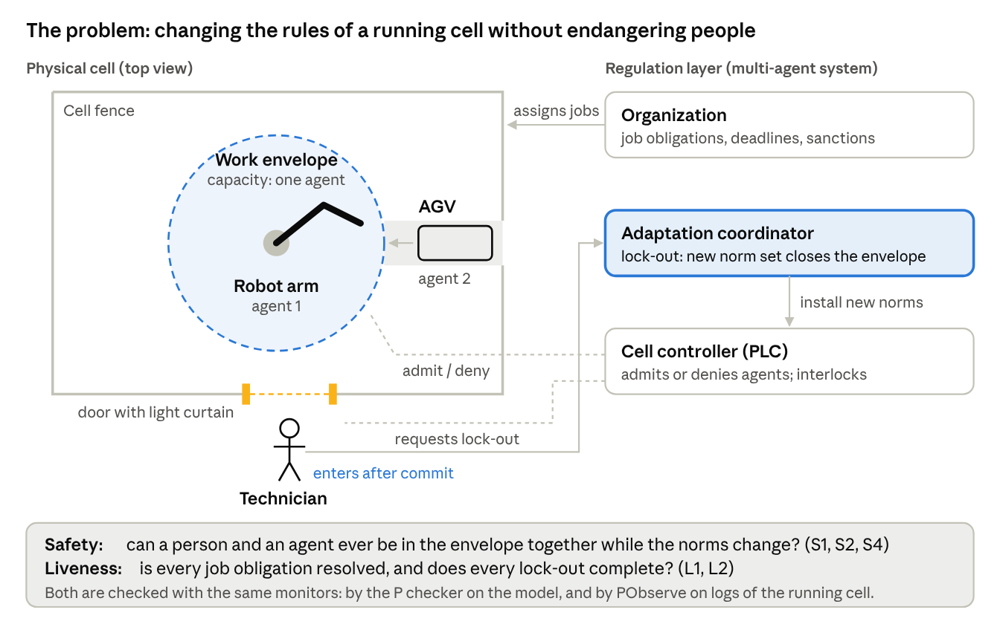
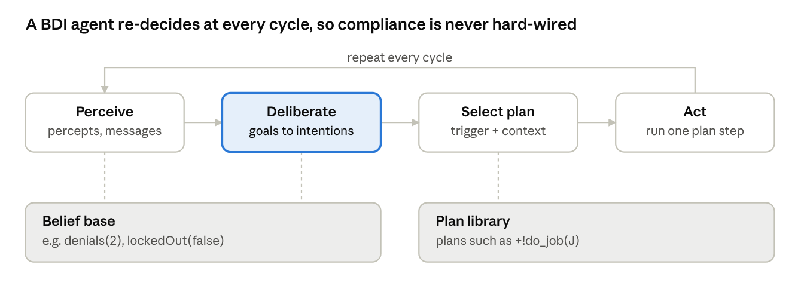
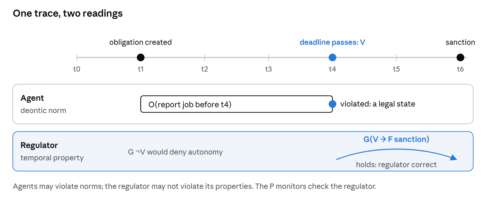
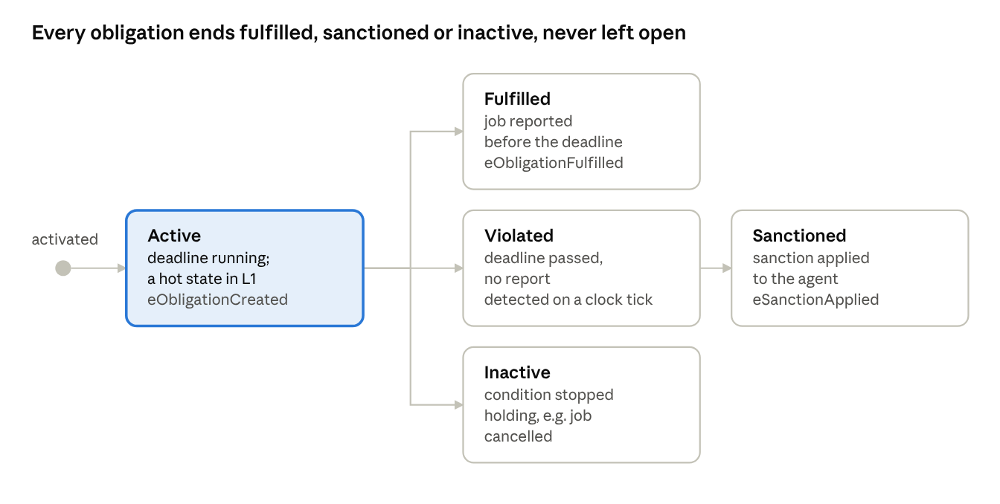
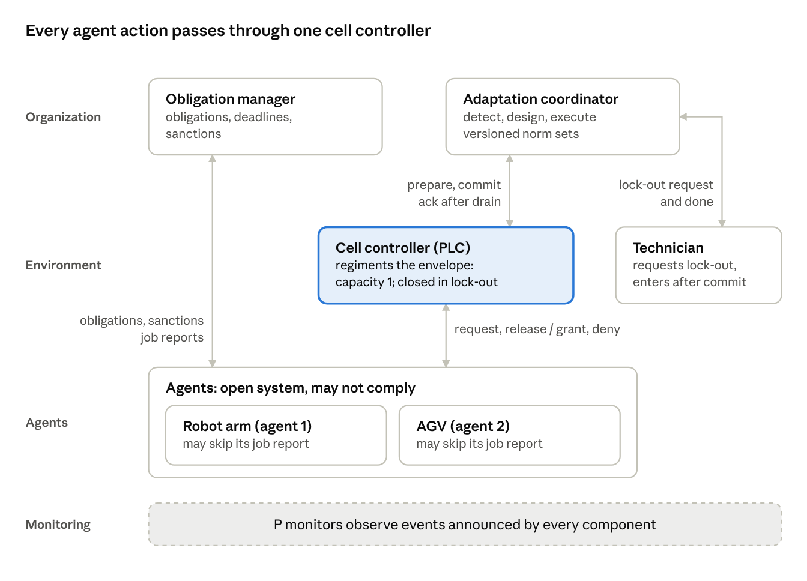
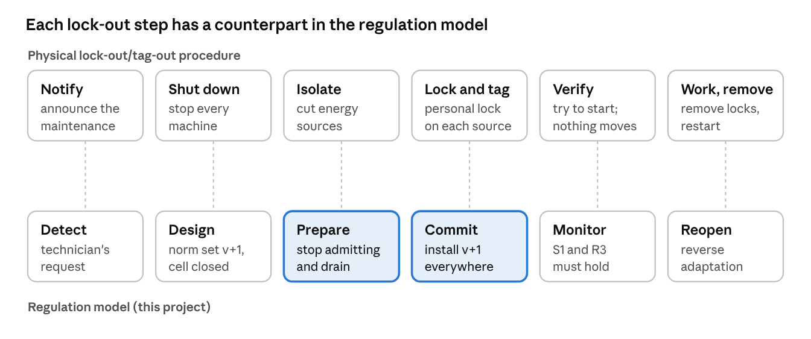
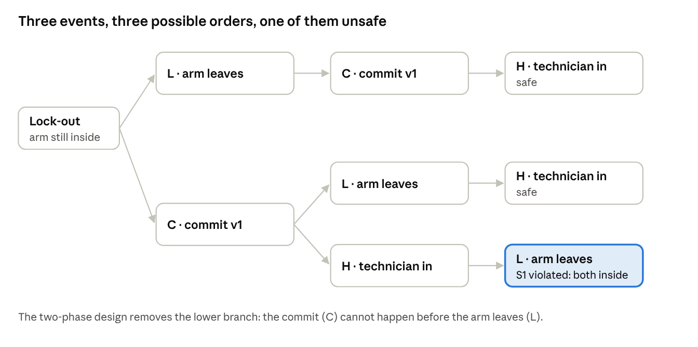
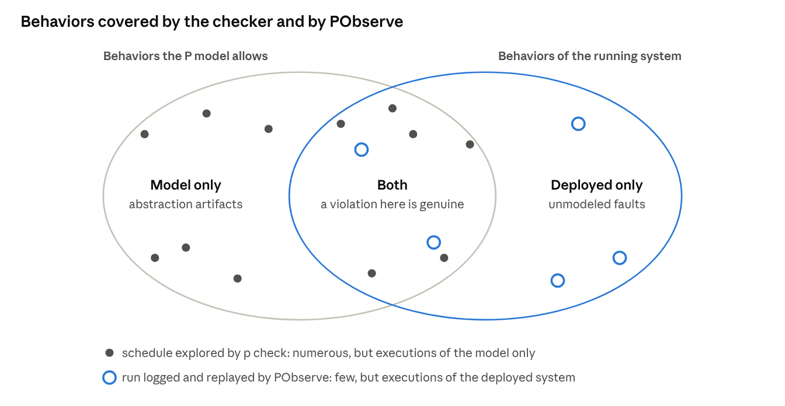
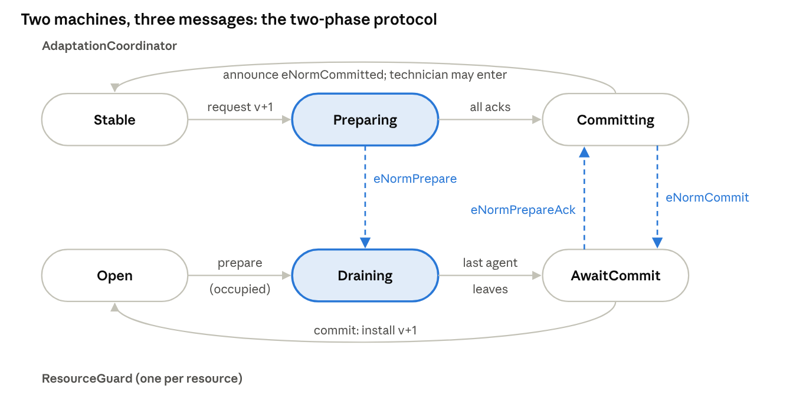
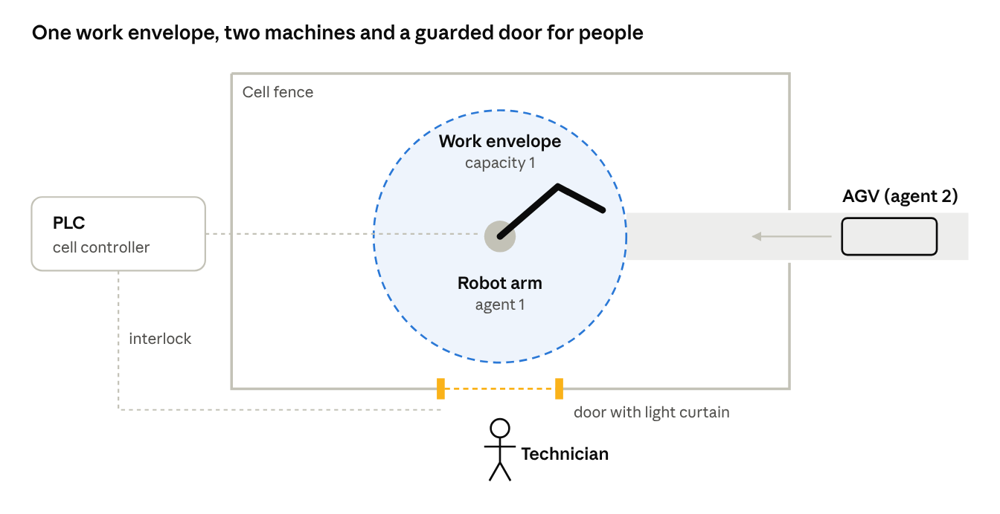

Verified Regulation Management for a Manufacturing Cell (P + PObserve)
Repository and access
All project materials are hosted in the public GitHub repository perkusic/P-Language:
Project folder:
Projects/ProjectManufacturingCell2026. It contains the starter kit, the operating instructions and this specification.P tutorial:
P-Tutorial. It covers installation, a first P program, specification monitors and the model checker, and is intended for days 1–7 of the project.
Access. The repository is public, and no account or authorization is required to use it. It can be browsed on GitHub, cloned (git clone https://github.com/perkusic/P-Language.git) or downloaded as a ZIP archive (Code → Download ZIP). A GitHub account is required only to fork the repository or to propose changes.
1. Summary
The objective of this project is to construct and verify the regulation layer of a manufacturing cell in two complementary steps:
The regulation layer is modeled in the P language and verified by systematic model checking (design time).
Execution logs of a running or simulated cell are checked against the same P monitors with PObserve (run time).
The project operationalizes one cell of the conceptual grid proposed by Yan, Nardin, Boissier & Sichman (A Unified View on Regulation Management in Multi-Agent Systems, COINE 2025), turning a classification into a system whose properties can be checked mechanically. The grid is spanned by three perspectives: regulation capabilities, programming dimensions and architectural style. The cell considered here is organization-centric and environment-centric, with a centralized architecture.
Research questions. (i) Which regulation properties of a centralized, normative multi-agent manufacturing cell can be verified at design time, and which can only be monitored at run time? (ii) Under which interleavings of events does a straightforward implementation of regulation adaptation fail to preserve these properties?
Working hypothesis. A naive adaptation policy, in which the coordinator declares the new norm set and the controller installs it upon receipt, admits executions in which a maintenance technician enters an occupied work envelope. A two-phase policy (prepare, drain, commit) is expected to exclude such executions. The project tests this hypothesis for both policies and supports each conclusion with a counterexample trace from the checker or a violation report from PObserve.
Learning outcomes. Upon completion, students are expected to be able to:
explain multi-agent systems, normative MAS and regulation management, and position a given design within the unified-view grid;
formalize obligations, prohibitions, sanctions and regulation adaptation as communicating state machines in P;
express safety and liveness properties as P specification monitors and interpret the counterexamples produced by
p check;compile the same monitors for PObserve, implement a log parser, and check execution logs against them;
argue which properties are amenable to design-time verification and which require run-time monitoring.
2. Background: multi-agent systems
A multi-agent system (MAS) is a set of autonomous agents that share an environment and interact to achieve individual or collective goals. Because each agent decides autonomously, the global behavior of the system is not programmed directly but emerges from these interactions. This is the fundamental reason why such systems require regulation.
Agents. Following Wooldridge, an agent is a software or physical entity characterized by four properties:
autonomy: it acts without direct external intervention;
reactivity: it responds in a timely manner to changes in its environment;
pro-activeness: it exhibits goal-directed behavior;
social ability: it interacts with other agents through communication.
Most MAS platforms adopt the belief–desire–intention (BDI) model, in which agents reason over beliefs, desires (goals) and intentions (plans to which they have committed). Jason, an interpreter for the AgentSpeak language, is a representative example.
Multi-Agent Oriented Programming (MAOP). Boissier et al. decompose a MAS into four programming dimensions, each with its own first-class abstractions. The JaCaMo platform combines one technology per dimension.
| Dimension | First-class abstractions | JaCaMo technology | Role in this project |
|---|---|---|---|
| Agent | beliefs, goals, plans | Jason | robot arm and AGV controllers |
| Environment | artifacts with operations and observable properties | CArtAgO | cell controller (PLC) admitting agents to the work envelope |
| Interaction | protocols, messages | Jason speech acts | access request / grant / deny protocol |
| Organization | roles, groups, missions, norms | Moise + NPL | job obligations, deadlines, sanctions, lock-out procedure |

The physical layer lies outside the MAS; the environment dimension is the interface through which the MAS acts upon it. For this reason, regimented safety norms are placed in the environment.
Open systems. In an open MAS the designer does not control the internal code of the agents, which may be supplied by different vendors or include learning components. Correctness therefore cannot depend on agent compliance: the regulation layer must preserve its guarantees under arbitrary agent behavior. Section 7 captures this assumption by modeling agents nondeterministically.
MAS in industrial cyber-physical systems. In Industry 4.0 architectures, machines, robots and transport units are encapsulated as agents that negotiate tasks and resources. A manufacturing cell thus becomes a small MAS whose shared physical resources (a work envelope, a buffer, a tool) must be regulated. Because some of its rules protect human operators, they must be enforced physically, not only at the logical level.
2.1 Agent architectures and the BDI cycle
Agent architectures are commonly classified into three families:
Reactive agents map percepts directly to actions; they respond quickly but do not plan.
Deliberative agents maintain a symbolic model of the world and reason about goals before acting.
Hybrid agents layer a reactive component (e.g., a robot's collision stop) beneath a deliberative one (e.g., job sequencing).
Industrial agents are typically hybrid: a deliberative agent operates on top of a programmable logic controller (PLC) or robot controller that is responsible for real-time control. JaCaMo agents are deliberative at the task level.
A BDI agent executes the following reasoning cycle repeatedly:
Perception. Percepts (sensor readings, artifact properties) and incoming messages are read, and the belief base is updated accordingly.
Deliberation. The agent selects the goals it will pursue; the selected goals become intentions.
Plan selection. A plan is chosen from the plan library whose triggering event matches the goal and whose context condition holds in the current beliefs.
Action. One step of one intention is executed (an action, a message or a subgoal), after which the cycle restarts at step 1.

A simplified version of the robot-arm agent in Jason (AgentSpeak) is shown below:
// plan: <trigger> : <context> <- <body>.
+!do_job(J) : true
<- requestAccess; // operation on the cell controller artifact; fails if denied
!process(J);
release;
.send(org, tell, done(J)). // the report that fulfils the obligation
// failure handling: after 3 denials give up the job (and accept the sanction)
-!do_job(J) : denials(N) & N >= 3
<- .drop_intention(do_job(J)).
-!do_job(J)
<- .wait(500); !do_job(J).The agent chooses whether to retry, abandon the job or report it; this choice is the locus of its autonomy. The regulation layer can constrain the outcomes of such choices, but not the reasoning that produces them.
2.2 Environment: artifacts
In CArtAgO, the environment is composed of artifacts: objects that agents use in the manner of tools. An artifact provides:
operations: actions that agents can perform on it;
observable properties: state that agents perceive as beliefs;
signals: transient events.
Because an operation may refuse to execute, artifacts are the natural locus of regimentation: an attempt to perform a prohibited action fails.
// The cell controller as a CArtAgO artifact (sketch)
public class CellController extends Artifact {
private int capacity;
void init(int capacity) {
this.capacity = capacity;
defineObsProperty("occupancy", 0);
defineObsProperty("lockedOut", false); // set by the norm set in force
}
@OPERATION void requestAccess() {
ObsProperty occ = getObsProperty("occupancy");
if (getObsProperty("lockedOut").booleanValue() || occ.intValue() >= capacity) {
failed("access denied"); // regimentation: the action fails
} else {
occ.updateValue(occ.intValue() + 1);
}
}
@OPERATION void release() {
ObsProperty occ = getObsProperty("occupancy");
occ.updateValue(occ.intValue() - 1);
}
}In a physical cell, the artifact wraps the PLC, typically through OPC UA, and the PLC actuates the interlocks. The ResourceGuard machine described in section 7 is the P model of this artifact.
2.3 Interaction
Agents communicate through an agent communication language such as KQML or FIPA ACL. Each message carries a performative that states its communicative intent, for instance inform, request, propose, accept or refuse. In Jason, .send(org, tell, done(j7)) informs the recipient of a fact, whereas .send(agv, achieve, unload) delegates a goal.
Recurring patterns of message exchange are fixed as protocols. The Contract Net protocol is the classical mechanism for task allocation: the organization announces a job, the arm and the AGV submit bids (e.g., based on availability), and the job is awarded to one bidder. Approaches based on social commitments (Singh) assign a normative meaning to protocol steps ("having accepted the job, the agent is committed to completing it"), thereby linking interaction to the norms discussed in section 3.
2.4 Organization: Moise
Moise describes an organization by means of three interrelated specifications:
| Specification | Describes | Cell example |
|---|---|---|
| Structural | roles, groups, links between roles, cardinalities | group cell_A with role operator_robot (max 2) and role cell_supervisor (1) |
| Functional | global goals decomposed into schemes and missions | scheme job: goals load, process, unload, report; mission m_job covers them |
| Normative | obligations and permissions linking roles to missions, with deadlines | an operator_robot is obliged to commit to m_job and achieve it within 4 ticks |
A simplified normative specification is shown below:
<normative-specification>
<norm id="n_job" type="obligation" role="operator_robot"
mission="m_job" time-constraint="4 minutes"/>
</normative-specification>At run time, the organization is itself represented as an artifact. Agents adopt roles and commit to missions, and the organization's normative engine (NPL, section 3) creates and tracks the resulting obligations.
2.5 Agents in manufacturing
Agent-based manufacturing has a long research history, and its reference architectures constrain where regulation can be placed:
Holonic manufacturing. PROSA (Van Brussel et al., 1998) decomposes a plant into product, resource and order holons, complemented by optional staff holons with an advisory role. ADACOR (Leitão and Restivo) adds adaptive switching between hierarchical and decentralized control.
Agents above automation. Agents operate above the real-time control layer (PLCs, IEC 61131 or IEC 61499 function blocks) and communicate with it through OPC UA. Hard real-time and safety functions remain in that layer.
Safety regulations. Robot safety standards (ISO 10218) and lock-out/tag-out procedures (e.g., OSHA 29 CFR 1910.147) determine the conditions under which people may enter a robot cell. The lock-out studied in this project is the normative-MAS counterpart of such a procedure.
The last point sets the standard for the project. A lock-out that is respected only in most executions is not acceptable: either the regulation guarantees it, or the design identifies the lower layer (an emergency stop or a door interlock) that provides the guarantee.
3. Background: norms and normative MAS
Norms allow a MAS to steer autonomous agents without programming their internal decision-making. They specify what ought to happen and what follows when it does not. A normative MAS is a MAS whose behavior is constrained by explicitly represented norms, which agents can reason about and the system can monitor and enforce (Boella, van der Torre and Verhagen).
Deontic modalities. A regulative norm typically takes one of three forms:
Obligation O(φ): the addressee must bring about φ, typically before a deadline; e.g., "the agent assigned job j must report completion before tick d."
Prohibition F(φ): the addressee must not bring about φ; e.g., "no agent may be in the envelope while a person is inside."
Permission P(φ): φ is allowed, often as an exception to a prohibition.
Norms are usually conditional: they comprise an activation condition, a deontic content, a deadline or expiry condition, and a sanction. Their lifecycle proceeds from inactive to active, and from active either to fulfilled or to violated and subsequently sanctioned.
Regulative and constitutive norms. Regulative norms constrain behavior ("must", "must not"). Constitutive norms define what things count as within the institution; e.g., "a badge swipe at door D counts as the technician entering the cell." The adaptation model adopted in this project relies on both kinds (section 4).
Enforcement mechanisms. A norm can be enforced in two ways:
| Mechanism | Idea | Guarantee | Cost | In this project |
|---|---|---|---|---|
| Regimentation | make the violation impossible: the environment refuses the action | the norm always holds | removes autonomy; only for actions the environment controls | the cell controller refuses admission to a closed or full envelope |
| Sanctioning (regulation) | allow the violation, detect it, react with a sanction | holds only as far as sanctions deter | needs monitoring and a fair sanction policy | a missed job deadline leads to a sanction |
Safety-critical norms in a CPS, where people and machines share the same space, must be regimented, whereas performance norms such as deadlines are normally sanctioned. Alechina, Bulling, Dastani and Logan (AAMAS 2015) show that not every norm can be enforced by a guard; the choice between the two mechanisms is therefore a substantive design decision.
Norms in JaCaMo. Moise organizations are compiled into programs of the Normative Programming Language (NPL). An NPL engine creates obligations when agents adopt roles and commit to missions, tracks their deadlines, and reports violations to the organization.
Verification of norms. Previous work has applied model checking to normative systems, for example:
ORWELL + MCAPL (Dennis et al.)
CÒIR in Maude (Gasparini et al.)
norm enforcement as supervisory control (Dastani, Sardina and Yazdanpanah)
These approaches primarily verify a normative specification. The present project instead verifies the regulation machinery: the concurrent components that monitor, enforce and modify the norms.
3.1 Anatomy of a norm
A conditional norm can be represented as a tuple of six components. The job obligation of the cell decomposes as follows:
| Part | Meaning | Cell example |
|---|---|---|
| Addressee | who the norm binds (an agent or a role) | the agent playing operator_robot that accepted job j |
| Activation | when an instance of the norm starts | the organization assigns j |
| Modality | obligation, prohibition or permission | obligation |
| Content | the state or action concerned | j is reported as done |
| Deadline | when the content must hold | tick of assignment + 4 |
| Sanction | what follows a violation (or reward for compliance) | lower priority in the next job allocation |
The norm is a template: each job assignment creates a new norm instance with its own deadline. The ObligationManager described in section 7 maintains one record per instance.
3.2 Deontic logic in brief
Standard deontic logic (SDL) is a modal logic with the operators O (obligatory), P (permitted) and F (forbidden). The operators are interdefinable, and axiom D states that an obligation implies a permission, so that no agent is obliged to bring about the impossible:
P(\varphi) \equiv \neg O(\neg\varphi) \qquad F(\varphi) \equiv O(\neg\varphi) \qquad O(\varphi) \rightarrow P(\varphi)SDL has well-known limitations. The most prominent concerns contrary-to-duty reasoning, i.e., what is obligatory after a violation has occurred; e.g., "no agent may move in the envelope during a lock-out; if one does, the cell must trigger the e-stop." Chisholm's paradox demonstrates that SDL cannot represent such norms adequately.
For this reason, normative MAS commonly treat norms operationally, as objects with a lifecycle (section 3.3) that are evaluated against the observed behavior of the system. P models norms in the same manner.
Deontic logic seen from temporal logic
For those who already know temporal logic, such as CTL and LTL, the intuition behind deontic logic is similar. All three are normal modal logics: each has a box operator, its dual diamond operator, and a semantics given by Kripke structures. In each, the box distributes over implication (axiom K), and every theorem may be prefixed with a box (necessitation rule). The logics differ in the interpretation of the accessibility relation (Figure 3). In temporal logic, the relation connects a point of a run to its successors; in deontic logic, it connects a world to its ideal alternatives, i.e., the worlds in which every norm is respected.

| Temporal logic (LTL / CTL) | Deontic logic (SDL) | |
|---|---|---|
| Box | G φ: φ holds at every future point (AG: on every run) | O φ: φ holds in every ideal world |
| Diamond | F φ = ¬G¬φ: φ holds at some future point | P φ = ¬O¬φ: φ holds in some ideal world |
| Box of a negation | G ¬φ: φ never holds | Forb φ = O ¬φ: φ is forbidden |
| Accessibility relation | "later than", along a run | "ideal alternative of" |
| Characteristic axiom | T (reflexivity): G φ → φ | D (seriality): O φ → P φ |
| Consequence of ¬φ in the current state | G φ is false; the run is a counterexample | no inconsistency: O φ ∧ ¬φ is satisfiable |
A note on notation: F denotes eventually in temporal logic and forbidden in deontic logic. Where both logics appear together, as in the preceding table and in the remainder of this subsection, the deontic operator is written Forb.
The last two rows capture the essential difference. G is reflexive: if φ holds at every point, it holds at the present one, so a single state satisfying ¬φ refutes G φ. O is not reflexive: the ideal worlds need not include the actual world, so "the job ought to be reported" and "the job was not reported" may both be true. This is the property a normative system requires: a violation is neither a contradiction nor a defect of the specification, but a state that the system must be able to represent and to which it must react. Axiom D requires only that every world have at least one ideal alternative; it thereby excludes conflicting obligations (O φ ∧ O ¬φ) and nothing more.
From "ought" to "happens": the Andersonian reduction
Anderson (1958) showed that deontic logic can be reduced to an ordinary (alethic) modal logic extended with a single propositional constant V, interpreted as "a violation has occurred":
O\varphi \equiv \Box(\neg\varphi \rightarrow V) \qquad
P\varphi \equiv \Diamond(\varphi \wedge \neg V) \qquad
\mathit{Forb}\,\varphi \equiv \Box(\varphi \rightarrow V)Meyer (1988) applied the same idea to actions in the framework of dynamic logic: an action α is forbidden if every execution of α leads to a violation, [α]V, and permitted if some execution of α does not, ⟨α⟩¬V.
This reduction provides the conceptual basis for the approach adopted in this project. If violations are treated as observable events and the box is interpreted temporally, each norm becomes an ordinary temporal property about violations. The monitors of section 3.4 are constructed in this way: none of them employs a deontic operator, and each refers to fulfillment, violation or sanction events.
One trace, two readings
The reduction also clarifies whose behavior is being specified (Figure 4).

For the agents, norms are deontic. An agent may miss a deadline; the specification must therefore not reject such a trace, but must determine its consequences. Requiring G ¬V would be a modeling error: it would convert every norm into a regimented constraint and thereby eliminate the autonomy that characterizes an open MAS.
For the regulator, properties are temporal. The regulator must sanction every violation exactly once, must never admit an agent that the norm set prohibits, and must complete every adaptation. These are G and F properties that must hold on every run; a run that violates them exposes a defect in the regulator.
Consequently, the P monitors never assert that agents behave correctly. They assert that the regulation behaves correctly irrespective of agent behavior: S1 to S3 and R3 for regimented norms, where the regulator is able to block actions, and L1 and R1 for sanctioned norms, where the regulator must react to violations.
Kinds of norms as temporal patterns
Once violations are represented as events, each kind of norm corresponds to a characteristic temporal pattern. The following table illustrates these patterns with the norms of the cell.
| Kind of norm | Example in the cell | Violation V occurs when | What the regulator must guarantee |
|---|---|---|---|
| Achievement obligation with a deadline | report the job by tick d | tick d passes without a report | G(created → F(fulfilled ∨ sanctioned)), L1; bounded at run time, R1 |
| Maintenance obligation | keep the envelope empty while it is locked out | an agent is admitted while it is closed | regimented: G(closed → ¬admitted), S2 |
| Prohibition | no agent in the envelope with a person | both are inside | regimented: G ¬(agent inside ∧ person inside), S1 |
| Contrary-to-duty obligation | if an agent is inside during lock-out, trigger the e-stop | the prohibition above is violated | G(V → X e-stop): a property of the reaction |
| Permission | an agent may enter an open, empty envelope | never: a permission cannot be violated | AG(request ∧ open → EF granted): branching, not a trace property |
Two rows of the table require further explanation.
Contrary-to-duty norms become straightforward to express. Chisholm's paradox arises in SDL because the logic has neither a notion of time nor an explicit representation of violations. When V is an event, the secondary obligation is triggered by that event. Temporal deontic logics with deadlines avoid the paradox in the same manner.
Permission is not a trace property. The statement "an agent may enter" asserts that some admissible continuation allows the agent to enter. A single run in which the agent did not enter is therefore not evidence of a violation, since the agent may have chosen not to enter. In CTL, permission corresponds to an EF property quantified over all possible futures, which neither a single-trace monitor nor PObserve can check. The P checker can approximate it as a liveness property under fairness, namely that every request for an open resource is eventually granted. The report should state which of the cell's norms correspond to safety, liveness or branching properties.
Two further paradoxes
Ross's paradox. From O(report the job), SDL derives O(report the job ∨ delete the log), because the box operator is closed under logical consequence. In LTL, the analogous inference G φ → G(φ ∨ ψ) is innocuous; for obligations, however, it is counterintuitive, since deleting the log would appear to discharge the duty.
Free-choice permission. The statement "an agent may use cell A or cell B" should intuitively entail "an agent may use cell A", yet P(φ ∨ ψ) → P φ is not valid in SDL.
These paradoxes motivate the decision to specify norms operationally, as machines that create, fulfill and violate norm instances, and to verify them with temporal monitors rather than by reasoning in SDL. The Stanford Encyclopedia of Philosophy entry on deontic logic provides a broader survey.
3.3 Lifecycle of a norm instance
Each norm instance evolves according to a small state machine. The monitors defined in section 7 observe its transitions through the P events indicated beneath each state.

An instance that remains in Active indefinitely constitutes the failure detected by liveness property L1. An instance that reaches both Fulfilled and Sanctioned is excluded by safety property S3.
3.4 Norms as temporal properties
To verify norms with a model checker, each kind of norm is expressed as a temporal-logic property (G denotes always, F denotes eventually). The class of the resulting property determines how it is checked in P:
| Norm kind | Temporal property | Property class | P construct | Checked at run time? |
|---|---|---|---|---|
| Prohibition: never an agent and a person in the envelope | G ¬(agentIn ∧ personIn) | safety | assert in a spec | yes (PObserve) |
| Obligation without deadline: every job is eventually resolved | G(assigned → F resolved) | liveness | hot state in a spec | no: a finite log cannot show "never" |
| Obligation with deadline d | G(assigned → F≤d resolved) | bounded response (a safety property over time) | assert when the clock passes d | yes (PObserve) |
| Permission | none on its own | — | only as an exception inside a prohibition's monitor | — |
In an open system, the regulation cannot guarantee that every obligation is fulfilled; it can guarantee only that every obligation is resolved, either by fulfillment or by sanction. The property to be checked is therefore:
\mathbf{G}\big(\mathit{assigned}(a,j) \rightarrow \mathbf{F}_{\le 4}\,(\mathit{reported}(a,j) \lor \mathit{sanctioned}(a,j))\big)3.5 Normative programming in JaCaMo: NPL
The Normative Programming Language (NPL) of Hübner, Boissier and Bordini expresses norms as rules, each consisting of an activation condition and a deontic consequence with a deadline. A simplified NPL-style rule for the job obligation is shown below:
norm n_job:
play(A, operator_robot, cell_A) & assigned(A, J)
-> obligation(A, n_job, done(J), `now` + `4 minutes`).The NPL engine maintains each obligation instance in one of four states:
active: the condition holds and the deadline has not been reached;
fulfilled: the content was achieved before the deadline;
unfulfilled: the deadline elapsed without fulfillment, i.e., the obligation was violated;
inactive: the activation condition ceased to hold.
The organization typically reacts to unfulfilled obligations by applying a sanction. Yan et al. extend NPL(s) and the SAI engine to support regulation adaptation (section 4).
3.6 Constitutive rules: Situated Artificial Institutions
Norms refer to institutional facts ("the technician is in the cell", "the arm has entered the envelope"), whereas the system observes physical facts ("the light curtain is interrupted", "badge 0412 was swiped at door D"). Constitutive rules relate the two. In Situated Artificial Institutions (SAI; de Brito, Hübner and Boissier), they take the form X count-as Y when C:
badge swipe at door D count-as the technician entering the cell, when a lock-out is committed
a lock-out request from an agent playing
maintenancecount-as a detect-fact for closing the cell
This relation is significant for verification: if a count-as rule is incorrect, the regulation operates on incorrect facts even when every other component behaves correctly. In this project, the count-as layer appears in two places:
in the model, where the
announcestatements determine which events count as institutional facts;at run time, in the PObserve log parser, which maps log lines to those facts.
The parser is therefore among the components that must be validated.
3.7 Sanctions
Sanctions may take several forms:
material: the loss of a reward, or a penalty in a cost model;
reputational: a reduction of a trust score;
access-based: a lower priority in job allocation, or a mandatory health check before the next job.
Sanctions may be applied by the organization, by peers or by the environment. Sanction policies should be proportional and fair, penalizing only conduct that the agent could have avoided. In the cell, an agent denied access during a lock-out may miss its deadline through no fault of its own; whether such an agent should be sanctioned is a design decision that the report must discuss.
3.8 Choosing an enforcement mechanism
The appropriate enforcement mechanism for a norm depends on two factors: the cost of a single violation, and whether the environment can physically block the forbidden action. Figure 6 positions the norms of the cell along these two dimensions.

High cost, blockable: regimentation. The cell controller can refuse entry, and a single collision or injury is unacceptable. The capacity norm and the norm "no agent together with a person" are therefore regimented.
High cost, not blockable: monitoring complemented by a safety layer. The multi-agent system cannot prevent a person from opening the door. Compliance with the lock-out procedure can only be monitored (property R3); the actual guarantee must therefore be provided by a layer below the MAS, such as a door interlock or an emergency stop.
Low cost, not blockable: sanctioning. A late job report affects throughput, not safety; in this case, preserving agent autonomy outweighs the benefit of strict control.
Low cost, blockable: a design decision. Regimentation is feasible but may reduce flexibility for a limited gain.
The figure also indicates where verification is most critical. A regimented norm must hold in every interleaving of events, which is the space the P checker explores. A sanctioned norm need only be resolved, by fulfillment or by sanction, which is a liveness property.
4. Background: regulation management in MAS
Regulation management concerns the balance between agent autonomy and system-level control. It comprises the representation, monitoring, enforcement and run-time modification of regulations. Yan, Nardin, Boissier and Sichman propose a unified view that positions any design along three perspectives, and they use the resulting grid to classify existing MAS frameworks.
| Perspective | Options | This project (cell) |
|---|---|---|
| Regulation capabilities | what the regulation layer can do; operationalized here as represent, monitor, enforce (regiment or sanction), adapt | all four |
| MAOP dimension | agent-, environment-, interaction-, organization-centric, or hybrid (several at once) | organization-centric (obligations, adaptation) + environment-centric (the cell controller) |
| Architectural style | centralized vs. decentralized / distributed regulators | centralized: one cell controller, one organizational engine |

The COINE 2025 paper is not openly deposited. During the first week, the exact list of capabilities given in the paper is to be verified and the mapping in section 7 adjusted accordingly.
Regulation adaptation. Regulations change at run time, for instance when a technician requires access to the cell, when a shift changes, or when a sensor fails. Yan et al. (ECAI 2025) propose a general adaptation model comprising three capabilities, each of which produces a fact:
Detect: recognition of a change that requires new regulation (a detect-fact).
Design: elaboration of the new regulation (a design-fact).
Execute: installation of the new regulation in the running system (an execute-fact).
Constitutive and regulative norms determine who may perform each step and under which conditions. The authors implement the model by extending the SAI and NPL(s) normative engines within JaCaMo. A companion paper (WESAAC 2025) discusses, by means of a manufacturing case study, where adaptation can be located along the MAOP dimensions.
Research gap addressed by this project. The unified view is a classification: it indicates where regulation is located, not whether a given design is correct. Two components that are individually correct may nevertheless interact incorrectly. For example, an adaptation coordinator and a cell controller exchange messages asynchronously, so that during a transient interval they may disagree on which norms are in force. In the cell, this interval corresponds to the period during which a person and a robot may share the envelope. Detecting such intervals requires a tool that explores message interleavings, as discussed in section 5.
4.1 The capabilities in detail
Each capability addresses a specific design question, and two designs may realize the same capability in substantially different ways.
| Capability | Question it answers | Design options | In this cell |
|---|---|---|---|
| Represent | Where and how are the norms written down? | implicit in agent or controller code; explicit declarative norms (NPL); versioned norm sets | a versioned norm set (is the envelope locked out?), plus job obligations in the organization |
| Monitor | Who observes what, and is it enough to detect a violation? | agents monitor themselves; artifacts observe actions on them; the organization collects reports | the cell controller observes entries and exits; the door switch observes people; the organization observes reports and the clock |
| Enforce | What happens to a violation? | regimentation (it cannot happen) or sanctioning (it is detected and punished) | regimented capacity and lock-out; sanctioned deadlines |
| Adapt | How do the norms change at run time, and who may change them? | detect, design and execute steps, each run by an agent, an artifact or the organization | the technician detects; the coordinator designs and executes; the cell controller installs |
Observability. A norm can be monitored only if its content is observable. The norm "no agent in the envelope together with a person" requires observation of both envelope occupancy and human presence. If the light curtain fails, the regulation can no longer detect the technician and ceases to protect them without any indication of failure. Run-time monitoring with PObserve evaluates what the logs record and therefore inherits the same blind spots.
4.2 The MAOP views, with examples
The unified view locates regulation along the four MAOP dimensions. The examples below are typical systems for each view; they reflect the interpretation adopted in this specification rather than the classification given in the paper, which is to be verified during the first week.
| View | Regulation is represented and managed by… | Typical mechanism | Strength | Weakness |
|---|---|---|---|---|
| Agent-centric | the agents themselves | norm-aware BDI agents that reason about obligations and choose to comply | full autonomy; no central component | relies on agents being honest and correct |
| Environment-centric | artifacts in the environment | CArtAgO artifacts or PLC interlocks that refuse forbidden actions | strong guarantees (regimentation) | only for actions that pass through an artifact |
| Interaction-centric | the protocols agents use to communicate | electronic institutions whose governors filter messages; commitment protocols | catches violations in communication | blind to physical actions |
| Organization-centric | an organizational infrastructure | Moise roles and missions with an NPL engine | explicit, inspectable norms | needs reliable reports from agents and environment |
| Hybrid | several of the above together | e.g. organization for obligations + environment for safety | each norm enforced where it is cheapest and strongest | the parts must stay consistent with each other |
The cell combines two views: safety norms reside in the environment (the cell controller), and performance norms reside in the organization (job obligations). The lock-out lies at the intersection of the two, since the organization decides and the environment enforces.
4.3 Architectural styles
| Style | Structure | Advantages | Risks |
|---|---|---|---|
| Centralized | one regulator for the whole system | one consistent view; simple to verify | bottleneck and single point of failure; does not scale to large plants |
| Hierarchical | regulators per area under a supervisor | local decisions with global oversight | the supervisor still sees changes late |
| Distributed | several peer regulators, each owning part of the system | scales; local, fast decisions; no single point of failure | regulators can disagree during a change; needs a coordination protocol |
A single cell is naturally centralized, since one controller governs the envelope. Nevertheless, the regulator is divided into two components, the coordinator (organization) and the controller (environment), and the messages exchanged between them reproduce, on a small scale, the consistency problem of distributed systems.
4.4 Adaptation as a control loop
The detect–design–execute model of Yan et al. resembles the MAPE-K loop of autonomic computing (Kephart and Chess, 2003), which comprises the activities Monitor, Analyze, Plan and Execute, operating over shared Knowledge:
| MAPE-K step | Adaptation capability | Cell example |
|---|---|---|
| Monitor + Analyze | detect | the technician's request is recognized as a need for a lock-out |
| Plan | design | the coordinator computes norm set v + 1 with the envelope closed |
| Execute | execute | the cell controller installs v + 1 |
| Knowledge | the norm sets and the organization's state | current version, lock-out status, open obligations |
One difference is significant: in a normative MAS, the adaptation loop is itself regulated. Constitutive norms determine which facts count as a valid trigger, and regulative norms determine who may perform each step; e.g., only an agent playing maintenance or safety_officer may request a lock-out. An unauthorized request therefore constitutes a violation in its own right.
4.5 Consistency during a regulation change
The transition window is the interval between the decision to change the norms and the moment at which the controller applies the change. Three hazards arise within this window:
Stale admission. The controller, still operating on the previous norm set, admits an agent after the lock-out has been declared (property S2).
Premature entry. The technician enters before the envelope has been emptied (properties S1 and R3).
Lost or reordered update. Two adaptations overlap; e.g., a second technician's request arrives during an ongoing lock-out. Version numbers and the serialization of adaptations in the coordinator prevent this hazard.
The remedy adopted from distributed databases is two-phase commit, extended here with a drain step: prepare, wait until the envelope is empty, acknowledge, and commit. The protocol has a known cost: if the agent inside never leaves, the lock-out never completes. This case corresponds to liveness property L2, which experiment E3 examines. In a physical cell, it is handled by a lower-level safeguard, the emergency stop, which this project represents only as a modeling limitation.
4.6 Lock-out/tag-out as regulation adaptation
The lock-out of the cell is not a hypothetical construct: industrial safety regulations prescribe a lock-out/tag-out (LOTO) procedure, each step of which has a counterpart in the adaptation model (Figure 8).

The correspondence clarifies both what the model contributes and what it omits:
Contribution of the model. In a physical cell, verification consists of a person attempting to start the machine. In the model, verification is performed by monitors evaluated in every explored interleaving: S1 (no agent together with a person) and R3 (entry only after commit).
Omissions of the model. Physical energy isolation and personal locks have no counterpart in the model. The model assumes that a committed norm set stops the agents, whereas the physical procedure does not rely on software at all. The report should state this gap explicitly.
Location of the risk. The prepare and commit steps are those that the naive design handles incorrectly; in LOTO terms, the naive design instructs the technician to enter before the lock has been applied.
5. Background: the P language and PObserve
P models a system as state machines that communicate through asynchronous events. Its checker explores many orderings of these events in search of one that violates a property. P was developed at Microsoft Research (Desai et al., PLDI 2013) and is used at AWS for services such as S3, DynamoDB and EC2. Since regulation components exchange messages asynchronously, they conform directly to this model of computation.
Core concepts. The principal constructs of P are summarized in the following table:
| Concept | P syntax | Meaning |
|---|---|---|
| Event | event eAccessRequest: tAccess; | a typed message |
| Machine | machine ResourceGuard { … } | an actor with local variables and an input queue |
| State and handler | state Open { on eAccessRequest do (r: tAccess) { … } } | how the machine reacts to an event in a state |
| Send | send guard, eAccessRequest, (agent = 1, …); | asynchronous message to another machine |
| Defer / ignore | defer eX; / ignore eX; | keep the event for later / drop it in this state |
| Nondeterminism | if ($) { … } | the checker tries both branches: models agents that may not comply |
| Monitor (spec) | spec S observes eA, eB { … } | a global observer that asserts properties |
| Announce | announce eResourceEntered, e; | notify monitors without sending to any machine |
| Hot / cold state | hot state Waiting { … } | liveness: an execution must not stay in a hot state forever |
| Test case | test tc [main=Test]: assert S in { … }; | a closed system plus the monitors to check |
A minimal regimentation guard and the safety monitor that observes it are shown below:
machine ResourceGuard {
var occupants: set[int];
var normSet: tNormSet;
start state Open {
on eAccessRequest do (r: tAccess) {
if (!(resource in normSet.closed) && sizeof(occupants) < capacity) {
occupants += (r.agent);
announce eResourceEntered, (agent = r.agent, res = resource, ver = normSet.ver);
send r.agentRef, eAccessGranted, (resource = resource, version = normSet.ver);
} else {
send r.agentRef, eAccessDenied, resource;
}
}
}
}
spec RegimentationSafety observes eResourceEntered, eHumanEntered /* … */ {
start state Watching {
on eResourceEntered do (e: tEnter) {
assert !(e.res in humanIn), "agent admitted while a human is inside";
}
}
}Checking. p compile builds the project, and p check -tc <test> -s 10000 executes 10,000 schedules of the given test case. A failed assertion produces a trace under PCheckerOutput/BugFinding/, which can be replayed using its seed. The checker is a bug-finding tool: it explores a large number of schedules but does not prove correctness for all input sizes.
PObserve: the same monitors at run time. PObserve checks logs of a deployed system against P specifications in four steps:
p compile --mode pobservecompiles the monitors (without the model machines) into the Java classesPEvents,PTypesandPMachines.A Java log parser maps each log line to a P event and a partition key (in this project, the site).
The PObserve CLI (
java -jar PObserve-1.0.0.jar --jars <package> --spec <Monitor> -l <log>) or the JUnit integration replays the events through the monitor.PObserve reports the first violation together with a replay of the events that led to it.

Design-time and run-time checking therefore share a single definition of correctness.
PObserve reports assertion failures but not hot states that remain open at the end of a finite log. Liveness properties are therefore reformulated as bounded-response properties for run-time checking; e.g., "resolved within 1 tick of the deadline".
Scope of each check. The checker and PObserve answer different questions, and neither can replace the other (Figure 10).

The checker explores many schedules, but only of the model. A violation it reports is genuine only to the extent that the model is faithful; a violation in the "model only" region results from an abstraction, such as agents that release the envelope instantaneously. The absence of violations constitutes evidence about the design, bounded by the number of schedules explored.
PObserve examines few executions, but real ones. A violation it reports actually occurred, to the extent that the log is accurate. It provides no information about executions that were not logged, nor about faults that the log cannot represent, such as a sensor that failed to detect a person.
The overlap is where the two techniques meet: the same monitor, written once, evaluates both the design and the running system. A finding obtained with one technique should be reproduced with the other: a counterexample from the checker becomes a test log, and a PObserve violation becomes a new test case for the model.
The region outside both sets motivates a safety layer below the MAS: no software check covers a failure that can be expressed neither in the model nor in the log.
5.1 Types and data
P is statically typed. Its type system comprises:
Primitive types:
int,bool,float,string,machine(a reference to a machine) andevent.Collections:
seq[T],set[T],map[K, V].Tuples: named, e.g.
(agent: int, res: int, ver: int).Enums and type aliases:
type tNormSet = (ver: int, closed: set[int]);.
Values are copied when sent, so machines share no memory and all coordination takes place through messages. This is the reason why the coordinator and the cell controller can temporarily disagree, and it is this disagreement that the checker explores.
5.2 Machine lifecycle
machine CellController {
var occupants: set[int];
start state Init {
entry (cfg: (resource: int, capacity: int)) { // payload given to `new`
goto Open;
}
}
state Open {
on eAccessRequest do (r: tAccess) { /* admit or deny */ }
on eNormPrepare goto Draining; // leave Open, enter Draining
ignore eTick; // explicitly not interested
}
state Draining {
entry { /* stop admitting; ack when the envelope is empty */ }
defer eNormPrepare; // keep it queued for later
}
}new CellController((resource = 0, capacity = 1))creates a machine and executes theentryblock of its start state with the given payload.goto Sexecutes theexitblock of the current state and then theentryblock ofS.raise ehandles an event immediately within the same machine.thisdenotes the machine's own reference, which is used to receive replies.
5.3 Communication semantics
send m, e, payload;is asynchronous: the sender continues immediately, and the event is appended to the single input queue ofm.Events from one sender to one receiver are delivered in the order in which they were sent; events from different senders may interleave in any order. These interleavings constitute the search space of the checker.
Messages are not lost by default. Failures, such as a crashed controller or a lost message, must be modeled explicitly, e.g., by a machine that may drop or delay messages using
$.Unhandled events are errors. If a machine receives an event that its current state neither handles, defers nor ignores, the checker reports a bug. This mechanism exposes protocol gaps early, such as the controller receiving
eReleasewhile draining.deferandignoreshould therefore be introduced deliberately and not merely to suppress checker reports.
5.4 Specification monitors
A spec machine is a global observer with the following characteristics:
It declares the events it
observesand executes synchronously whenever one of them is sent or announced.It cannot send events; it can only update its own variables and evaluate
assertstatements.An execution may terminate in a cold state, whereas a hot state must eventually be left. If a run remains in a hot state beyond the bound, the checker reports a liveness violation.
announce e, payload;delivers an event to monitors only. Machines use it to publish institutional facts (an entry, a commit, a sanction) without sending them to another machine.
5.5 How the checker explores
The checker replaces the scheduler of the real system. At each step, it determines which machine executes next and how each $ choice is resolved.
A run up to a bound on the number of steps is called a schedule, and -s 10000 requests 10,000 schedules. Exploration strategies range from random choices to priority-based strategies designed to reach deep bugs with few context switches. Each bug is reported together with the seed that reproduces it.
The search finds bugs but does not prove their absence. Models should therefore be kept small (two agents, one technician, a bounded clock) and enlarged only after the small model passes.
Why interleavings matter. Concurrent systems fail because of particular orderings of events rather than because of individual events. Consider three events during the lock-out: the arm leaves the envelope (L), the coordinator commits the new norm set (C), and the technician enters (H). Since the technician waits for the commit, H always follows C, which leaves three possible orders (Figure 11).

Two of these orders are safe. The third, C followed by H and then L, places the technician in the envelope together with the arm. Testing would reveal this order only if the scheduler happened to deliver the messages in that sequence, which may be rare on a lightly loaded controller. The checker, in contrast, enumerates the orders systematically, so that a race involving three events is found within seconds.
The figure also illustrates the effect of a design correction. The two-phase protocol does not reduce the probability of the unsafe order; it eliminates that order, because the coordinator commits only after every guard has reported that its resource is empty. A correction that merely makes a race less frequent, such as a delay before the commit, leaves the branch in the tree, and the checker will continue to find it.
5.6 Common pitfalls
Over-deterministic test drivers. If the test always starts the technician after the agents, many bugs cannot manifest. Nondeterministic choices (
$) and multiple drivers should be used to widen the set of orderings.Monitor timing. A monitor observes an event when it is sent, before the receiver processes it; a clock tick is therefore visible to a monitor before the organization has applied it. For this reason, the run-time deadline monitors (R1, R2) are not used in the checker.
Liveness and fairness. Hot-state checks assume that every enabled machine eventually executes. A reported violation caused solely by starving a machine indefinitely does not correspond to a real defect.
Unbounded models. An unbounded clock or retry loop produces unbounded schedules. Such loops must be bounded (
maxTicks, a retry limit), and the bounds must be stated in the report.
5.7 Mapping normative concepts to P
| Normative concept | P construct | Where in the starter kit |
|---|---|---|
| Norm set (lock-out status) | a versioned tuple tNormSet | Common/MonitorEvents.p |
| Regimented prohibition | admission check in a machine + assert in a monitor | ResourceGuard.p, Specs.p (S1) |
| Obligation instance | an entry in a map keyed by obligation id | ObligationManager.p |
| Deadline | logical clock events eTick | Clock.p |
| Violation and sanction | deadline check on each tick, then eSanction + announce eSanctionApplied | ObligationManager.p |
| Constitutive rule (count-as) | which announce a machine makes; at run time, the log parser | machines; CellRegulationParser.java |
| Adaptation (detect, design, execute) | coordinator states and the prepare/ack/commit events | AdaptationCoordinator.p |
| Open agent | nondeterministic $ choices | CellAgent.p |
| Lock-out procedure | a monitor over eNormCommitted and eHumanEntered | RuntimeSpecs.p (R3) |
5.8 PObserve in more detail
Partition keys. The parser assigns a key to each event. All events with the same key are delivered, in timestamp order, to a dedicated instance of the monitor. The key must be chosen so that every property depends only on the events of a single key. In this project, the key is the cell (site), which allows several cells to share one log file.
Ordering. Events that are out of timestamp order within a key are counted as errors. PObserve also maintains a replay window of recent events (
--replay) for reporting. Timestamps require microsecond precision.Parser contract.
apply(logLine)returns a stream of zero or more events, and an empty stream for lines that do not represent regulation events. The parser must hold no static mutable state, because PObserve executes parsers on several threads.Generated classes.
p compile --mode pobservenames tuple classes after their abbreviated field names; e.g.,(agent, res, ver)yieldsPTuple_agent_res_ver. The generatedPTypes.javashould be inspected before the parser is written.Execution modes. JUnit tests are suited to continuous integration on recorded logs, whereas the CLI is suited to on-demand checking of production logs.
Learning path (days 1–7):
Installation of P and completion of the official tutorials (p-org.github.io/P): ClientServer and TwoPhaseCommit.
Study of the PObserve documentation: overview, log parser and CLI.
Build and execution of the LockServer PObserve example in the P repository (
Src/PObserve/Examples/LockServerPObserve).Reading of Desai et al., PLDI 2013, sections 1–3.
6. The system: a regulated manufacturing cell
A robot arm (agent 1) and an automated guided vehicle (AGV, agent 2) share one work envelope (resource 0, capacity 1). A single cell controller admits agents to the envelope, and an organizational engine assigns jobs with deadlines. At unpredictable times, a maintenance technician must enter the cell; this first requires a lock-out, i.e., a regulation adaptation that closes the envelope to agents.


The cell controller is the only means of access to the envelope, so regimented norms hold as long as its norm set is current. Keeping the norm set current during a lock-out is the responsibility of the coordinator, and the correctness of this function is the object of verification in this project.
Normal operation. The cell operates as follows:
The organizational engine assigns a job to an agent, thereby creating an obligation with a deadline.
The agent requests access to the envelope from the cell controller.
If the envelope is open and unoccupied, the controller admits the agent; otherwise, it denies the request, and the agent retries up to three times before abandoning the job.
The agent performs the work, releases the envelope and reports completion. In an open system, an agent may fail to report.
If the deadline elapses without a report, the organization sanctions the agent.
Lock-out (regulation adaptation). The lock-out proceeds in the following steps:
Detect. The technician requests the lock-out.
Design. The adaptation coordinator computes the next norm set, with the version incremented by one and resource 0 closed.
Execute. The new norm set is installed in the controller, after which the technician is authorized to enter.
Upon leaving, the technician requests the reverse adaptation, which reopens the envelope.
Norms of the cell. The norms in force are summarized below:
| Norm | Modality | Enforcement | Level |
|---|---|---|---|
| At most one agent in the envelope | prohibition | regimented by the cell controller | physical safety |
| No agent in the envelope while a person is inside | prohibition | regimented by the cell controller | physical safety |
| A person enters only after the lock-out is committed | obligation on the procedure | monitored | safety procedure |
| Report a job before its deadline | obligation with deadline | sanctioned by the organization | performance |
| A job ends either fulfilled or sanctioned, never both | integrity of the organization | by construction, monitored | organizational |
Execution policies. Two policies for executing the lock-out are compared:
Naive. The coordinator declares the new norm set immediately, and the controller installs it whenever the corresponding message arrives.
Two-phase. The coordinator sends prepare; the controller stops admitting agents, waits until the envelope is empty (drain) and then acknowledges. Only after the acknowledgement does the coordinator commit.

In the naive sequence, the controller still holds norm set v0 when the arm requests entry, because v1 is still in transit. The two-phase sequence cannot reach this state, since the technician is authorized to enter only after the controller has drained the envelope and acknowledged.
The naive policy corresponds to a typical first implementation. Demonstrating why it is unsafe constitutes the central result of the project.
The two-phase protocol as state machines. In the starter kit, the protocol is distributed over two P machines (Figure 15): the AdaptationCoordinator and one ResourceGuard per resource.

Prepare. The coordinator sends
eNormPrepareto every guard. A guard whose resource is closed by the new norm set enters the stateDraining, in which it denies every new request but allows current occupants to finish. An empty or unaffected guard acknowledges immediately and proceeds directly toAwaitCommit.Acknowledge. When the last agent leaves, the guard sends
eNormPrepareAckand waits. It continues to deny requests, because it does not yet know whether the commit has taken place.Commit. Only after receiving all acknowledgements does the coordinator announce
eNormCommitted, which the monitors observe and which authorizes the technician to enter. It then sendseNormCommitso that each guard installs the new version.
The highlighted states carry the safety argument. Between Preparing and the commit, the closed resource is empty and inaccessible, so there is no instant at which a guard admits an agent under the previous rules while the technician acts under the new ones. The naive design omits both highlighted states. The cost of the protocol is equally apparent: if an occupant never leaves, the coordinator remains in Preparing indefinitely. For this reason, L2 (AdaptationCompletes) is a liveness property that must be checked, and the experiments deliberately remove releases.
7. Technical specification
The deliverable is a P project consisting of three parts:
a model of the cell;
a catalogue of monitors checked against that model;
a PObserve package that checks the same monitors against execution logs.
A starter kit containing draft versions of all three parts is provided (section 9). The project consists in making it compile, correcting it, justifying every modeling decision, and extending it.
7.1 Model components
| P machine | Unified-view role | MAOP dimension | Responsibility |
|---|---|---|---|
CellAgent (×2) | regulated agent | agent | requests the envelope, works, releases; reports or not ($) |
ResourceGuard | regimentation | environment | admits or denies by norm set and capacity; drains during prepare |
ObligationManager | sanctioning | organization | creates obligations, checks deadlines on each tick, sanctions |
AdaptationCoordinator | adaptation (detect → design → execute) | organization | versioned norm sets; two-phase or naive policy |
HumanRequester | source of the detect-fact | environment (human) | requests the lock-out, enters on commit, leaves, requests reopening |
Clock | time | — | logical ticks; one final far-future tick so that every deadline passes |
7.2 Property catalogue
| Id | Monitor | Kind | Checked by | Expected with two-phase / naive |
|---|---|---|---|---|
| S1 | RegimentationSafety: capacity never exceeded; never an agent and a person together | safety | checker + PObserve | holds / violated |
| S2 | NoStaleAdmission: no admission to a resource the committed norm set closes; versions in order | safety | checker + PObserve | holds / violated |
| S3 | NoDoubleOutcome: an obligation is never both fulfilled and sanctioned | safety | checker + PObserve | holds / holds |
| L1 | EveryObligationResolved: every obligation is eventually fulfilled or sanctioned | liveness (hot state) | checker | holds / holds |
| L2 | AdaptationCompletes: every adaptation eventually commits | liveness (hot state) | checker | holds / holds |
| R1 | ObligationDeadlineRespected: resolved within 1 tick of the deadline | bounded response | PObserve | holds / holds |
| R2 | AdaptationBoundedTime: commits within 5 ticks | bounded response | PObserve | holds / holds |
| R3 | LockoutBeforeEntry: a person enters only a locked-out resource | safety (procedure) | checker + PObserve | holds / holds |
The expected outcomes are hypotheses derived from the design. A sample-log simulator agrees with them, but they have not yet been confirmed with p check; their confirmation or refutation is part of the project.
7.3 Experiments (priorities in 7.5)
| # | Experiment | Change to the model | Question answered |
|---|---|---|---|
| E1 | Baseline, two-phase | none | Do S1–S3, L1, L2 and R3 hold under 10^5 schedules? |
| E2 | Baseline, naive | twoPhase = false | Which monitor fails first, and through which sequence of steps? |
| E3 | Stuck agent | an agent never releases the envelope | Does L2 fail? What physical safeguard (e-stop) does this argue for? |
| E4 | Two technicians | a second HumanRequester | Are overlapping adaptations serialized correctly? |
| E5 | Deadline pressure | due from 4–6 down to 2 | How do sanctions grow, and do S3 and L1 still hold? |
| E6 | Scale | 3–4 agents, larger maxTicks | Checker run time and schedules per second; where does exploration stop scaling? |
7.4 Run-time part (PObserve)
Log contract. Each regulation event is recorded as one log line:
Site=cell-A, Event=ENTER, Agent=1, Res=0, Ver=0also
CONFIG,TICK,OBLIGATION,FULFILLED,SANCTION,LEAVE,ADAPT_START,COMMIT,HUMAN_ENTER,HUMAN_LEAVE
Each line is prefixed by a UTC timestamp with microsecond precision. Site is the partition key.
Package. The package is a Gradle project that runs p compile --mode pobserve on the monitors only, together with a Java parser, JUnit tests and a CLI runner script.
Validation. The package is validated against the following criteria:
the two-phase sample log passes every safety monitor;
the naive sample log fails S1 and S2;
R1 and R2 detect injected faults, namely a deleted
SANCTIONline and a delayedCOMMIT.
Instrumentation (stretch goal). The log is emitted from a small JaCaMo implementation of the cell using the RegulationLog.java helper, and PObserve is run on that log.
7.5 Requirements
| Priority | Requirement |
|---|---|
| Must | All P files compile; E1 and E2 run; each result is explained with the trace or report |
| Must | Every monitor is justified against a norm of section 6 |
| Must | The PObserve package builds; both JUnit tests pass on the sample logs |
| Should | E3 and E4; the fault-injection runs for R1 and R2 |
| Could | E5 and E6; JaCaMo instrumentation and a run on its logs; comparison with a Maude or UPPAAL encoding of one property |
8. Work plan and deliverables
The project is carried out in five phases over 45 calendar days, counted from the start date. Each phase lasts 7 to 11 days and concludes with a short checkpoint meeting and a tagged commit.

The verification phase constitutes the core of the project. If modeling is delayed, the optional JaCaMo instrumentation of the run-time phase is to be omitted, rather than experiments E1 and E2.
Deliverables. The deliverables and their due dates are listed below:
| # | Deliverable | Due (day) | Content |
|---|---|---|---|
| D1 | Background note | 7 | 2–3 pages: MAS, norms, the unified view, P; the cell placed in the grid, with justification |
| D2 | Verified model | 28 | compiling P project; results of E1, E2 and the Should experiments, with traces and explanations |
| D3 | PObserve package | 38 | parser, JUnit tests, runner, fault-injection logs, results |
| D4 | Final report | 45 | 8–12 pages in a workshop-paper format (e.g. EMAS, COINE or WESAAC) |
| D5 | Presentation and demo | 45 | 15 minutes: one checker counterexample and one PObserve violation shown live |
9. Starter kit, setup and references
The p-regulation archive is given. This project uses Common/, ManufacturingCell/ and tools/.
| Path | Content | Status |
|---|---|---|
Common/*.p | shared model machines and monitors | draft, not yet compiled |
ManufacturingCell/PSrc, PTst | cell agents, wiring, test cases | draft, not yet compiled |
ManufacturingCell/pobserve/ | Gradle build, parser, JUnit tests, sample logs | parser compiled and run on the sample logs; JUnit not yet run |
ManufacturingCell/INSTRUCTIONS.md | step-by-step commands for both parts | ready |
tools/simulate_logs.py | generates two-phase / naive logs and previews monitor results | tested |
tools/instrumentation/RegulationLog.java | logging helper for JaCaMo | compiles |
Software environment. The following tools are required:
.NET SDK 8.0, then
dotnet tool install --global PJava 17 or later
Gradle 8.x
Python 3
Alternatively, the Docker image ghcr.io/p-org/p:latest, which bundles .NET, a JDK and the p CLI, may be used. The PObserve CLI must be built once from the P repository (Src/PObserve/PObserve, ./gradlew build).
Getting started. The following commands compile the model, check the naive test case, and build and run the PObserve package:
cd ManufacturingCell
p compile
p check -tc tcCellNaive -s 10000
cd pobserve && gradle wrapper && ./gradlew build uberjar && ./run_pobserve.shReferences
Core:
E. Yan, L. G. Nardin, O. Boissier, J. S. Sichman. A Unified View on Regulation Management in Multi-Agent Systems. COINE workshop, 2025. HAL
E. Yan, L. G. Nardin, O. Boissier, J. S. Sichman. A Regulation Adaptation Model for Multi-Agent Systems. ECAI 2025, doi:10.3233/FAIA251245. HAL
E. Yan, L. G. Nardin, J. F. Hübner, O. Boissier, J. S. Sichman. Perspectives on Regulation Adaptation in Multi-Agent Systems. WESAAC 2025, doi:10.5753/wesaac.2025.37527. SOL
A. Desai et al. P: Safe Asynchronous Event-Driven Programming. PLDI 2013. Microsoft Research
P language documentation and PObserve guides. p-org.github.io/P
M. Brooker, A. Desai. Systems Correctness Practices at AWS. ACM Queue / CACM. ACM Queue
Norms and verification:
N. Alechina, N. Bulling, M. Dastani, B. Logan. Practical run-time norm enforcement with bounded lookahead. AAMAS 2015. repository
L. Dennis et al. Model Checking Normative Agent Organisations. PDF
L. Gasparini et al. CÒIR: Verifying normative specifications of complex systems. COIN 2015, LNCS 9628. record
M. Dastani, S. Sardina, V. Yazdanpanah. Norm Enforcement as Supervisory Control. PRIMA 2017. record
D. Dell'Anna, M. Dastani, F. Dalpiaz. Runtime Revision of Sanctions in Normative MAS. JAAMAS 34(2), 2020. PDF
Norm specification and verification in multi-agent systems (survey). IfCoLoG J. Logics and their Applications 5(2), 2018. record
O. Boissier, B. Gâteau. Normative Multi-Agent Organizations: Modeling, Support and Control. Dagstuhl 2007. DROPS
Deontic and temporal logic:
A. R. Anderson. A reduction of deontic logic to alethic modal logic. Mind 67(265):100–103, 1958.
J.-J. Ch. Meyer. A different approach to deontic logic: deontic logic viewed as a variant of dynamic logic. Notre Dame Journal of Formal Logic 29(1):109–136, 1988.
P. McNamara and F. Van De Putte. Deontic logic. Stanford Encyclopedia of Philosophy.
Textbooks and background (from the field's standard literature; locate the current editions):
M. Wooldridge. An Introduction to MultiAgent Systems. Wiley, 2nd ed. 2009.
O. Boissier, R. H. Bordini, J. F. Hübner, A. Ricci. Multi-Agent Oriented Programming: Programming Multi-Agent Systems Using JaCaMo. MIT Press, 2020.
G. Boella, L. van der Torre, H. Verhagen. Introduction to normative multiagent systems. Computational & Mathematical Organization Theory, 2006.
P. Leitão et al. Smart Agents in Industrial Cyber-Physical Systems. Proceedings of the IEEE 104(5), 2016.